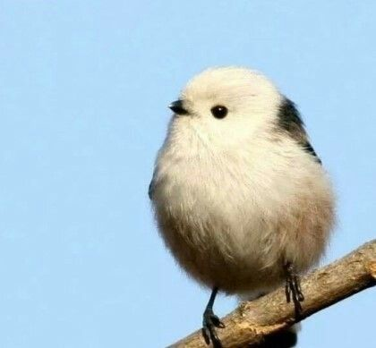

토끼 입양 전 필요한 것
케이지는 금속제로 된 것을 선택하는 것이 좋아요. 브러쉬로 털을 자주 빗어주고 다듬어 주는게 좋아요. 쉽게 뒤집어지지 않는 적당한 무게감이 있는 그릇이 좋아요. 생후 6개월 후에는 티모시 건초를 주세요. |
주의사항
- 바나나, 체리, 비타민 채소 자극적인 음식들은 피하는게 좋아요. 쉽게 뒤집어지지 않는 적당한 무게감이 있는 그릇이 좋아요. 생후 6개월 후에는 티모시 건초를 주세요. |
|  |
새 입양 전 고려해야 할 것
- 케이지 주변은 위생 상태 유지를 위해 규칙적으로 청소해야한다. 흡연이나 향초, 오일과 방향제 등의 화학물질과 매연에 민감하다. - 민감한 후각을 가진 새들은 주인의 조리 도구에도 영향을 받을 수 있다. 씨앗이나 사료뿐만 아니라 곡물, 콩류, 과일, 채소 등을 골고루 먹여야한다. 적절하게 다뤄줄 필요가 있고 길들여야한다. - 따라서 매일 새와 보낼 수 있는 충분한 시간을 낼 수 없고, 새가 움직이고 놀 수 있는 충분한 공간 제공이 어려운 경우, 새를 입양해선 안된다. |